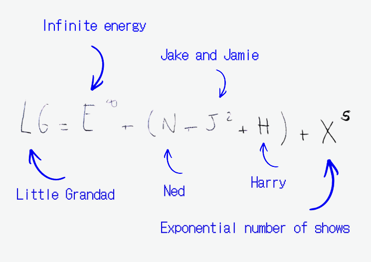
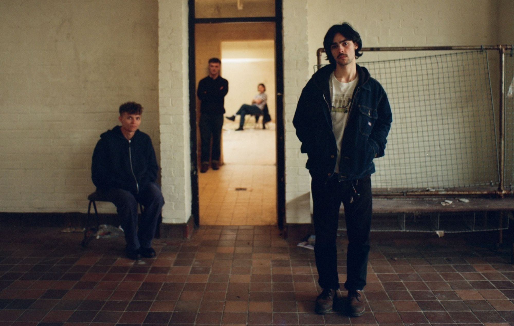
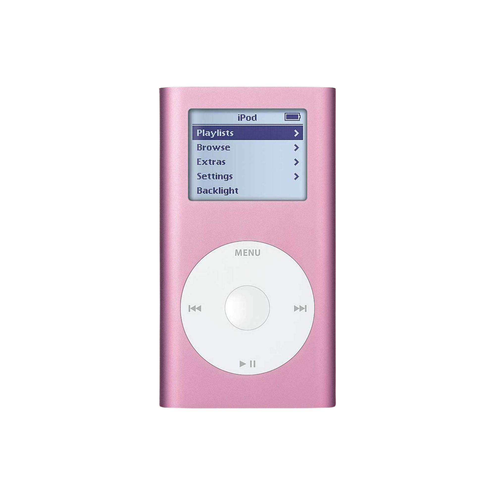

Pitchfork Paris Festival
follow pink iPod on Instagram @pink.i.pod

If I framed today’s band like a mathematical equation, it might be because there is a certain mystery to the inexhaustibility of the band. I met them on their 98th show of the calendar year. This interview, for once in a more classic format of interview quotes and comments, attempts a deductive argument to solve the Little Grandad equation. But remember, Pink iPod is very bad at maths ;)
For my first interview at the Pitchfork Paris Festival, I was met with four pairs of sparkly eyes, eager to listen, to speak, hungry for life and for concerts, driven by a familiar recipe: a youth who finally found its purpose. Hunger, thirst, the metaphors are immediately driven by the pillars of life, because you can feel how vital music has become for them all over the room, like a quiet buzz. They lodge that energy in the crooked corners of independent venues, “None are perfect, and that is the point” and preferably outside the usual circuits: “We feel we have done a lot, but we still need to do more. The smaller cities are important, because when a small band comes to town, people really appreciate it. In smaller venues you get a bigger connection with the audience, and in regional cities it is even better. For the album we are going to do a regional tour, hopefully in some smaller towns. We always chat about that.”
While streaming numbers might be far away from the band’s mind, some others do matter, and I can tell you: they’re precise! They first told me they were on their 98th gig this year. Immediately, Pink iPod stalker syndrome took over: “You said 100 in another interview I read” to which Jack answers “That was our 100th gig total. This calendar year it is 98”, but wait, Ned is bidding as well: “And next year we are going to do even more, closer to 150”. All in, though, is there truly another way to play? I asked them if they were feeling any creeping anxiety or fatigue after the intense first year of the band, “15 months”, Jack first corrected, and then, they tell me that, on the contrary, they have developed a reliance on the ring of your heart beating on stage “but it is healthy, we promise”. Is it? Should it be? I just loved that they cared so much.
They did experience some pressure before dropping the album, an unexpected move according to the drummer Jimmy, who mentioned everyone was expecting an EP. The fever of live performance and learning instruments as they go reversed the original creation process. While it was originally Harry bringing lyrics to the table, it’s now the instruments who first inhabit the song, as it has been taking more room and their new lifestyle.
And now, dear Pink iPod readers, we test your knowledge of Pink iPod lore. Which non-musical artist did they most recently interview? ….
Yes, bingo for Xander Lewis. If you got it right, you can retrieve your gift at the end of the page*
Xander Lewis happens to make Little Grandad “look cool”, as Harry states. The band had found the name before the cover, but while going through old pictures, they stumbled onto their grandad dressed in a clown costume. First black and white, the Lewis’ touch added its usual tone of uncanniness with its colorising. When asked if they desired the eerie feeling, Ned says they were not going for “creepy” but the picture does the same thing as their title Unmasked “We like the idea that the songs reel you in and you think, this is nice” but it “gets quite uneasy by the end”. Jack says “I think the picture does the same thing as the songs. It reels you in, and then you think, what the fuck is going on? That meets the chaos we actually have.”
Perhaps, on gig 1000, we will meet again and they will still be grabbing life very close, making sure they enjoy the truth of existence while they have it. Photo credit : Xander Lewis
*demanding a gift from an indie blog in the dark corners of the internet? You have poor survival instincts

